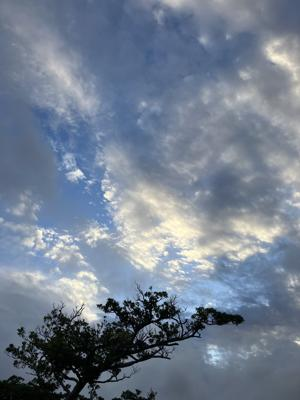
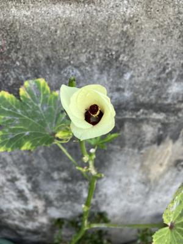

うるがいの話 ある日
最新: ２０２３年は『壊』【うるがいの話 ある日】とは 一日だけのプログです
『うるがいの話』の最新一日だけのプログで、通信料が少なく経済的だ。カニの画像をクリックすると全ての日付が載る『うるがいの話』サイトを表示します
|
|
【うるがいの話】 うるがい(ｳﾙｶﾞｲ urugai)とは、『もずくがに』の名前でとても大きくなります。 |
|---|---|
|
|
【カミマヤーの話】 猫のことを方言でマヤーといいます。カミマヤー（kamimayaa）とは、神の猫のことです。 |
|
【たながぁの音楽】 たながぁ（ﾀﾅｶﾞｰ tanagaa）とは手長えびのことで、何種類かあり大きいのは車 エビぐらいになります。 |

|
【ぶながぁの話】 ぶながぁ(ﾌﾞﾅｶﾞｰ bunagaa)とは、赤い髪の毛、赤い身体、そして身長は１ｍ２０ｃｍ ぐらい、川の蟹を食べているの目撃された。場所は沖縄県国頭郡大宜味村のと ある村僕の隣近所に住んでいる爺さんから、聞いた話です。 |
|
|
【ギーマの話】 ギーマ(giima)とは、山原の里山に咲くスズランに似た、 花を付けます。実は食べられます、 気が付くと口の周りが紫になっています。 |
2023年12月31日 (日）２０２３年は『壊』
15:33

大晦日である。今年を振り返り漢字一文字で表すと『壊』かな。強烈なのは台
風６号の被害（台風をナメていた）。一カ月におよんだ歴代２位６ミリの尿路
結石。壊れたもの新しい順に、電気の電線、アクアの右サイドミラー、４３イ
ンチの液晶テレビ、マウスピース、電話回線、ドラム式洗濯乾燥機のドア、市
立図書館のＣＤケース、陶器の急須、陶器のお椀。どうだ！、大吉のおみくじ
になにか関連する注意書きがあるか、確認したが無かった。ただし、４３イン
チの液晶テレビは、いまのところ正常に稼働している。老害の武田鉄矢が老け
ている画像をみて、４３インチの精度を改めて認識する。

趣味のユーチューブ動画では、モーリス・ラヴェル『ボレロ』のＢメロで盛り
上がったこと（それでも、視聴回数は６６どまり、『さくらさくら 箏』は１
、６１６回：毎日誰かが視聴している）。そして、年末の締めに、元気が出る
ベンチャーズの曲をアップした。参考にしたネット上の楽譜データのテンポは
２９０ＢＰＭ、あまりにも早いと思い、三線でテンポが速い曲『ヒヤミカチ節
登川誠仁』に合そうとテンポを調べると、１２７ＢＰＭ。この値を設定した
ら、ベンチャーズの曲でない！、しかたなく２６０ＢＰＭに設定した。動画を
アップした後に、他の人のおなじベンチャーズ（三線）を視聴すると、世の中
には凄い人がいるものだ、ピックでの演奏、コード弾き、グリッサンドでテン
ポはおそらく２９０ＢＰＭ（アップした２６０ＢＰＭよりは明らかに早い）だ
った。勘所を打ち込むのに３時間以上（４４２小節）面倒くさいので打ち込み
を止めようかなと何度も思った、こんなの弾く人がいるのかと作成したが、出
来る人はいるのだろうと考え直す。因みに今年は三線を一度も弾いていない。
『ベンチャーズ パイプライン 三線』３分２８秒 ユーチューブ動画
１５時２６分 ビットコインの総資産 ￥１７、２２５（↓１８）